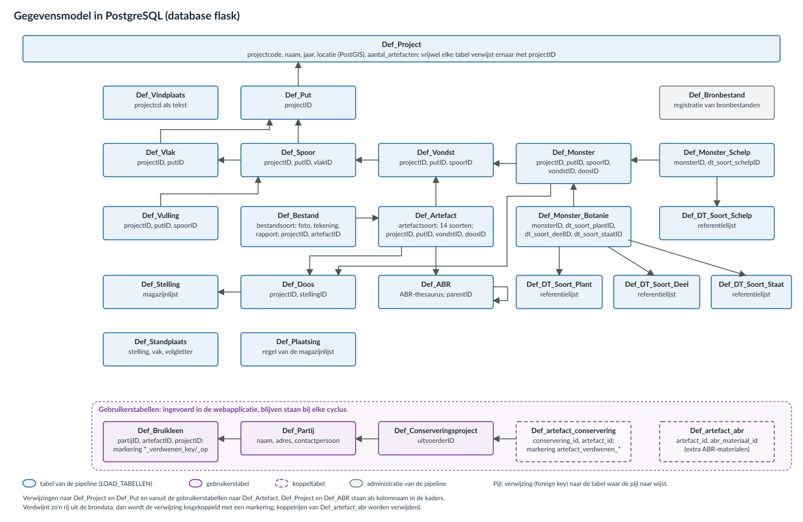

Gegevensmodel¶
Het definitieve gegevensmodel van de Wasstraat staat in PostgreSQL, in de database van de webapplicatie (FLASK_PGDATABASE, standaard flask). De tabellen zijn gedefinieerd als SQLAlchemy-modellen in app/app/models.py; de webapplicatie maakt ze aan bij het opstarten (db.create_all()) en de pipeline vult ze. Deze pagina beschrijft de tabellen, hun relaties en wie ze vult.

Drie soorten tabellen¶
| Soort | Tabellen | Gevuld door | Bij een cyclus |
|---|---|---|---|
Tabellen van de pipeline (LOAD_TABELLEN in loadToDatabase_functions.py) |
Def_Project, Def_Vindplaats, Def_Put, Def_Vlak, Def_Spoor, Def_Vulling, Def_Vondst, Def_Artefact, Def_Monster, Def_Monster_Botanie, Def_Monster_Schelp, Def_Bestand, Def_Stelling, Def_Standplaats, Def_Plaatsing, Def_Doos, Def_ABR, Def_DT_Soort_Plant, Def_DT_Soort_Schelp, Def_DT_Soort_Deel, Def_DT_Soort_Staat |
Airflow, uit Single_Store_Clean |
Opnieuw gevuld: vervangen (volledige cyclus) of bijgewerkt (incrementele cyclus), met stabiele primary_keys |
Gebruikerstabellen (GEBRUIKERS_TABELLEN) |
Def_Bruikleen, Def_Partij, Def_Conserveringsproject en de koppeltabellen Def_artefact_conservering en Def_artefact_abr |
Gebruikers, in de webapplicatie | Blijven staan; alleen verwijzingen naar verdwenen rijen worden bijgewerkt |
Administratie van de pipeline (PIPELINE_TABELLEN in shared/const.py) |
Def_Bronbestand |
Airflow (CREATE TABLE IF NOT EXISTS) |
Bijgewerkt bij de registratie; buiten de atomic swap en de zoekindex |
Daarnaast bevat de database de tabellen van Flask-AppBuilder voor gebruikers en rechten (ab_user, ab_role, ab_permission, ...), spatial_ref_sys van PostGIS en de ongebruikte voorbeeldtabel observation.
Gemeenschappelijke kolommen¶
Elk model van de pipeline erft van WasstraatModel en heeft:
| Kolom | Inhoud |
|---|---|
primary_key |
Integer-sleutel; komt uit Transform 4 (veld ID in MongoDB) en blijft gelijk tussen cycli |
_id |
Het _id van het document in Single_Store_Clean (in het model: uuid) |
key |
De samengestelde, leesbare sleutel, zoals PDB034P10V460 (vondst 460 in put 10 van DB034). Rijen zonder natuurlijke sleutel krijgen een sleutel met de hulpsleutel uit hun bronrij (...|bron:<pad>:<tabel>:<nummer>) |
soort |
De soort uit de pipeline (Vondst, Artefact, ...) |
brondata |
Het oorspronkelijke record (of de records, bij een samengevoegd document) als tekst, met het pad van het bronbestand (mdbfile) en de Access-tabel (table) |
herkomst |
Vrij veld voor de herkomst; alleen gevuld bij stellingen |
ft_search |
Technisch veld voor het zoeken in de webapplicatie |
De opbouw van de sleutels staat in Transformatie: sleutels; hoe de primary_key stabiel blijft in Incrementeel laden.
Tabellen van de pipeline¶
Opgraving¶
| Tabel | Model | Inhoud | Verwijst naar |
|---|---|---|---|
Def_Project |
Project |
Een opgraving of onderzoek: projectcode, naam, jaar, toponiem, trefwoorden, Rijksdriehoek- en WGS84-coördinaten, PostGIS-punt location, afgeleid aantal_artefacten |
– |
Def_Vindplaats |
Vindplaats |
Vindplaatsen uit de projectenlijst (tabel VINDPLAATSEN) |
– (alleen projectcd als tekst) |
Def_Put |
Put |
Put binnen een project | Def_Project |
Def_Vlak |
Vlak |
Vlak binnen een put | Def_Project, Def_Put |
Def_Spoor |
Spoor |
Grondspoor, met aard, beschrijving en datering | Def_Project, Def_Put, Def_Vlak |
Def_Vulling |
Vulling |
Vulling van een spoor | Def_Project, Def_Put, Def_Spoor |
Def_Vondst |
Vondst |
Vondstnummer: de verzameling vondsten uit één context, met datering | Def_Project, Def_Put, Def_Spoor |
Def_Artefact |
Artefact en subklassen |
Een voorwerp of determinatie, met de velden van alle artefactsoorten (zie hieronder) | Def_Project, Def_Put, Def_Vondst, Def_Doos, Def_ABR (materiaal en submateriaal) |
Def_Monster |
Monster |
Grondmonster | Def_Project, Def_Put, Def_Spoor, Def_Vondst, Def_Doos |
Def_Monster_Botanie |
Monster_Botanie |
Botanische determinatie in een monster | Def_Monster, Def_DT_Soort_Plant, Def_DT_Soort_Deel, Def_DT_Soort_Staat |
Def_Monster_Schelp |
Monster_Schelp |
Schelpdeterminatie in een monster | Def_Monster, Def_DT_Soort_Schelp |
Putten, vlakken, sporen en vondsten die alleen als nummer in andere records voorkomen, maakt Transform 5 zelf aan (brondata.table = generated_put, ...). Een eigen PUT- of VLAK-tabel in de brondata is dus niet nodig.
Bestanden¶
Def_Bestand (model Bestand) bevat alle foto's, tekeningen en rapporten: de map en bestandsnaam van het bronbestand, de paden van de drie formaten in de mediamap (imageID, imageMiddleID, imageThumbID), het type en de velden die uit de bestandsnaam of de fotocatalogus komen (put, vondst, subnummer, fotonummer, rapportnummer, ...). Een bestand verwijst naar Def_Project en, als het een objectfoto is, naar Def_Artefact (artefactID). De primary_key van een bestand blijft gelijk via de map en de bestandsnaam.
Depot¶
| Tabel | Inhoud | Verwijst naar |
|---|---|---|
Def_Stelling |
Stelling in het depot (magazijnlijst, tabel stellingen) |
– |
Def_Standplaats |
Plek in een stelling: stelling, vak en volgletter (één rij per regel van de magazijnlijst) | – |
Def_Plaatsing |
Regel van de magazijnlijst: welke doos van welk project op welke plek | – |
Def_Doos |
Doos met vondstmateriaal van een project | Def_Project, Def_Stelling |
Referentietabellen¶
| Tabel | Inhoud | Verwijst naar |
|---|---|---|
Def_ABR |
De ABR-thesaurus uit FILE_ABREXCEL: concept, code, label, periode, URI. De primary_key komt uit de bron |
Def_ABR (ouder) |
Def_DT_Soort_Plant, Def_DT_Soort_Schelp, Def_DT_Soort_Deel, Def_DT_Soort_Staat |
Referentielijsten van de monsterdatabase (R_PLANT, R_SCHELP, R_DEEL, R_STAAT) |
– |
Polymorfisme¶
Twee tabellen bevatten meer soorten, met overerving binnen één tabel (single table inheritance):
| Tabel | Kolom | Waarden en modellen |
|---|---|---|
Def_Artefact |
artefactsoort (enum DiscrArtefactsoortEnum) |
Aardewerk, Bouwaardewerk, Dierlijk_Bot, Glas, Hout, Kleipijp, Leer, Menselijk_Bot, Metaal, Munt, Schelp, Steen, Textiel en Onbekend (het basismodel Artefact). Elke subklasse voegt eigen kolommen toe, zoals baksel en glazuur bij aardewerk |
Def_Bestand |
bestandsoort (enum enumbestandsoorten) |
Foto's (Objectfoto, Opgravingsfoto, Sfeerfoto, Conserveringsfoto, Overige_afbeelding), tekeningen (Veldtekeningen, Veldtekening_Publiceerbaar, Overzichtstekeningen, Uitwerkingstekeningen, Objecttekening_op_millimeter_papier_of_film, Objecttekening_publiceerbaar, Bouwtekeningen_Topografie_Geologie, Overige_tekening), rapporten (Archeologische_Rapportage, Archeologische_Notitie, Conserveringsrapport, Overige_Rapportage) en Bestand_Overige |
In MongoDB heet dit verschil artefactsoort en bestandsoort; de harmonisatie-Excel bepaalt de artefactsoort per brontabel, het gemeenteprofiel en rapportcode_prefixen de bestandsoort. Een lege enumwaarde wordt bij het laden Onbekend (of de eerste waarde van de enum, als Onbekend er niet in staat).
Gebruikerstabellen¶
| Tabel | Inhoud | Verwijst naar |
|---|---|---|
Def_Partij |
Een organisatie of persoon (naam, adres, contactpersoon) | – |
Def_Bruikleen |
Een uitgeleend artefact of project: data van uitlenen en retour | Def_Partij (verplicht), Def_Artefact en Def_Project (mogen leeg zijn) |
Def_Conserveringsproject |
Een conserveringsproject met uitvoerder en data | Def_Partij (uitvoerder) |
Def_artefact_conservering |
Koppeltabel: welke artefacten een conserveringsproject behandelde | Def_Conserveringsproject, Def_Artefact (mag leeg zijn) |
Def_artefact_abr |
Koppeltabel: extra ABR-materialen bij een artefact | Def_Artefact, Def_ABR |
De pipeline laadt of leegt deze tabellen niet. Verdwijnt een rij waarnaar ze verwijzen uit de brondata, of krijgt die een ander nummer, dan bepaalt shared/gebruikersdata.py (VERWIJZINGEN) wat er gebeurt:
| Verwijzing | Beleid | Markering |
|---|---|---|
Def_Bruikleen.artefactID → Def_Artefact |
Loskoppelen: de bruikleen blijft, de verwijzing wordt leeg | artefact_verdwenen_key (de key van het verdwenen artefact) en artefact_verdwenen_op (tijdstip) |
Def_Bruikleen.projectID → Def_Project |
Loskoppelen | project_verdwenen_key, project_verdwenen_op |
Def_artefact_conservering.artefact_id → Def_Artefact |
Loskoppelen: vastgelegd blijft dat het project het artefact behandelde | artefact_verdwenen_key, artefact_verdwenen_op |
Def_artefact_abr.artefact_id → Def_Artefact, abr_materiaal_id → Def_ABR |
Verwijderen: een koppelrij zonder doel betekent niets | – |
Keert een rij met dezelfde key terug, dan koppelt de laadstap de verwijzing weer en wist hij de markering. De webapplicatie toont de markering in de lijst en het detail van de bruiklenen en bij het conserveringsproject. De markeringskolommen en de nullable verwijzingen bestaan niet in tabellen die met een oudere versie zijn aangemaakt; gebruikersdata.migreerSchema voegt ze idempotent toe, aan het begin van elke load en bij het opstarten van Flask.
Afgeleide velden¶
Sommige kolommen leidt de webapplicatie af uit andere tabellen. De laadstap berekent ze na elke load met SQL (herberekenAfgeleideVelden), alleen voor rijen waarvan de waarde verandert:
| Tabel | Kolom | Afgeleid uit |
|---|---|---|
Def_Artefact |
aantal_fotos |
Het aantal objectfoto's in Def_Bestand met dit artefact |
Def_Artefact |
vondstdatering_vanaf, vondstdatering_tot |
De datering van de vondst |
Def_Artefact |
spoordatering_vanaf, spoordatering_tot |
De datering van het spoor van de vondst |
Def_Artefact |
datering_vanaf, datering_tot |
De eerste niet-lege datering van artefact, vondst en spoor, in die volgorde |
Def_Project |
aantal_artefacten |
Het aantal artefacten van het project |
Bij wijzigingen in de webapplicatie werken observers in models.py en modelevents.py dezelfde velden bij. init.init() van de webapplicatie rekent ze bij het opstarten alleen nog als vangnet uit (als geen artefact een foto heeft).
Registratie van bronbestanden¶
Def_Bronbestand registreert elk verwerkt bronbestand met een vingerafdruk, zodat de incrementele cyclus weet wat nieuw, gewijzigd of verwijderd is:
| Kolom | Inhoud |
|---|---|
pad (sleutel) |
Pad zoals de Airflow-container het ziet |
categorie |
projecten, projectenlijst, magazijnlijst, fotolijst, monsterdatabase, rapporten, referentietabellen, extra_projecten, bestandenlijst of afbeeldingen |
grootte, mtime, sha256 |
Vingerafdruk |
status |
verwerkt of verwijderd |
verwerkt_op, run_id |
Laatste run die het bestand verwerkte |
aantal_records |
Aantal staging-documenten uit het bestand |
Zie Incrementeel laden: registratie van bronbestanden.
Van MongoDB naar PostgreSQL¶
Soort in Single_Store_Clean |
Tabel |
|---|---|
Project, Vindplaats, Put, Vlak, Spoor, Vulling, Vondst, Monster, Monster_Botanie, Monster_Schelp, Stelling, Standplaats, Plaatsing, Doos, ABR, DT_Soort_* |
Def_<soort> |
Artefact (alle artefactsoorten) |
Def_Artefact |
Foto, Tekening, Rapport, Bestand |
Def_Bestand |
Fotobeschrijving, Fotokoppel |
Geen tabel: ze worden in Transform 5 en 4 gebruikt om foto's te koppelen |
De laadstap neemt van elk document alleen de velden mee die als kolom in de tabel bestaan; andere velden blijven in brondata en in MongoDB. Een veld toevoegen aan het model vraagt dus een kolom in models.py én een veld in de harmonisatie (zie Componentenmodel).
Standaarden¶
- ABR: de thesaurus staat in
Def_ABR; artefacten verwijzen naar materiaal en submateriaal (uit de kolommenABR-materiaalenABR-submateriaalvan de harmonisatie-Excel) en gebruikers kunnen extra ABR-materialen koppelen. - Rijksdriehoek en WGS84: projecten hebben beide coördinaten en een PostGIS-punt in WGS84 (EPSG:4326) voor de kaart.
- Een vertaling naar CIDOC CRM, GGM of Linked Open Data bestaat nog niet; zie Toekomstvisie.